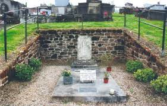
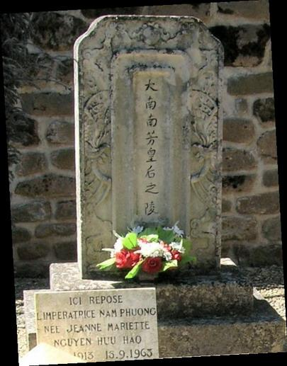

Năm 1955, sau sự lật lọng của Diệm, cựu hoàng Bảo Đại giận mình, giận đời, chán ngán cuộc sống, bỏ nhà đi săn dài ngày, không còn quan tâm gì đến vợ con. Những thói hư tật xấu như có cơ, không những quay trở lại mà ngày càng mạnh trong con người ông. Cha con, vợ chồng tan tác, bà Nam Phương đau khổ đến cùng cực.
Năm 1958, cảm thấy không thể sống ở Paris được nữa, kể cả vùng ngoại ô, để tránh mặt gia đình, người quen và cả báo chí, với tiền riêng của mình, bà mua một khu nhà của dân quý tộc ở làng Chabrignac thuộc tỉnh Corrrèze (nay François Holland, cựu chủ tịch đảng Xã hội Pháp, là chủ tịch tỉnh). Tỉnh này thuộc vùng Limousin, cách Paris trên năm trăm kilômét về phía nam. Đó là một trong những vùng xa xôi, cách biệt nhất của nước Pháp.
Chabrignac cách Brive-la-Gaillard ba mươi kilômét, nằm giữa những quả đồi có hơn bốn trăm dân với những chú bò sữa và những cánh đồng bát ngát, những đầm hồ có những chú vịt bơi lội… Khung cảnh tĩnh mịch, yên ắng nơi đây khác hẳn những ngọn núi ở Cannes hay không gian lặng lẽ của Đà Lạt. Tuy nhiên có thể thấy ở đây một vài cây thông, cành lá vi vu đung đưa trong gió. Đó là nét tương đồng duy nhất với thành phố cao nguyên ở Việt Nam.
Làng Chabrignac rộng khoảng một nghìn mẫu nhưng ít dân nên không khí thật trong lành. Có lẽ bà Nam Phương phần đã quá chán ngán với cuộc sống của giới thượng lưu, phần phiền muộn về thân phận. Một người phụ nữ có cả sắc lẫn tài và đức như bà đã sớm trao thân gửi phận cho một vị quân vương thiếu lòng chung thủy sắt son. Và trong lòng bà chắc cũng có nhiều suy nghĩ về diễn biến của thời cuộc và lòng người nên bà muốn được sống lặng lẽ, yên tĩnh và êm ả.
Ngôi nhà của bà dài, mái lợp ngói, tường đá, khá to lớn nằm trong trang trại la Perche ở làng Chabrignac. Tòa nhà dựa lưng vào sườn đồi, nằm khuất trong một khu vực có nhiều cây cối xanh tươi. Trước mặt là một cánh đồng bát ngát có nhiều đầm, hồ. Bà cho tu sửa và tân trang lại toàn bộ khu nhà và lắp đặt đầy đủ tiện nghi mới. Khu nhà có ba mươi hai buồng, bảy phòng tắm, bốn phòng khách… tọa trên một khu sườn đồi rộng một trăm sáu mươi héc ta.
Ngược với cựu hoàng Bảo Đại, bà Nam Phương còn giữ được phần lớn tài sản mà gia đình cha mẹ bà và ông cậu ruột Denis Lê Phát An mua cho bà. Ngoài căn nhà rộng mênh mông ở Neuilly, bà còn nhiều nhà ở Maroc, một căn nhà ở đại lộ Opéra, thêm một trang trại ở Congo và nhiều đồ vật quý. Nhưng con người bà sống thiên về tình cảm nhiều hơn nên dần dần bà chẳng thiết đến những tài sản ấy nữa mà chỉ nghĩ đến trang trại ở Chabrignac mà thôi.
Có lẽ khi mua khu nhà này trong tâm trạng nhanh nhanh rời bỏ thành phố Paris hoa lệ, ồn ào nên bà Nam Phương không để ý chăng. Hơn nữa đã từ lâu, bà đã không còn muốn nhắc đến dòng họ Nguyễn. Chính vì thế, khi đến đây bà mới biết bà là láng giềng của một người trong dòng tộc họ Nguyễn, là hậu duệ của ngai vàng An Nam. Đó chính là công chúa Như Lý, con gái vua Hàm Nghi, nay là nữ bá tước De la Besse. Trang trại la Perche của bà Nam Phương cách nhà bà Như Lý vài kilômét nhưng hàng rào trang trại lại sát với hàng rào của lâu đài Chabrignac, thuộc sở hữu của gia đình De la Besse từ nhiều thế kỷ nay.
Giữa hai người vẫn có quan hệ dòng tộc gần gũi. Trong lâu đài la Noche của công chúa Như Lý vẫn có pho tượng Phúc-Lộc-Thọ bằng ngọc thạch, là quà cưới của Bảo Đại. Bảo Đại –lúc được tấn phong hoàng đế An Nam – đã được vua Hàm Nghi tiếp ở Alger. Nhưng không hiểu sao lúc còn sống bà Nam Phương chưa một lần đến thăm bà bá tước De la Besse và ngược lại.
Từ ngày đến đây, trong ngôi nhà quá rộng rãi này, bên cạnh hai đứa con còn nhỏ là Phương Dung và Bảo Thắng, còn Bảo Long, Phương Mai và Phương Liên học ở xa, bà Nam Phương như thay đổi hẳn. Bà vui vẻ, cởi mở. Những phẩm chất tự nhiên của thời con gái như đang tái sinh trong con người bà. Cứ về đến nhà là bà hát, cười nói vui vẻ với các gia nhân. Bà mới ngoài bốn mươi tuổi và vẫn còn đẹp lắm.
Hàng ngày bà vẫn giữ thói quen tập thể dục vào mỗi buổi sáng vì vậy bà có thân hình thật lý tưởng. Sau khi tập thể dục xong, bà ăn mặc giản dị đi khắp trang trại, vui vẻ trò chuyện với những người nông dân đến chào bà. Nếu như những năm tháng sống ở Cannes, thần kinh bà lúc nào cũng căng thẳng khiến cho bà càng trở nên trầm lặng, lạnh lùng, xơ cứng đến khó hiểu thì lúc này đây bà như cảm thấy được thư giãn. Cởi bỏ chiếc áo khoác ngoài được mọi người tôn kính khi đi bên cạnh chồng trong các buổi tiếp đón chính thức hóa ra lại làm bà thấy dễ chịu hơn. Có lẽ đó không chỉ là việc phải tham gia vào các công việc đại sự của triều đình bởi bà hoàn toàn có khả năng và tự nguyện nhưng có chăng đó là do bà buồn khổ vì cách sống của chồng mà dù bà đã cố gắng về phía mình với những lời khuyên chân thành, đúng đắn, với một lòng vị tha đáng nể, vẫn không thay đổi được ông.
Hàng ngày bà tự lái chiếc xe Dauphine đi chợ mua bán. Tất nhiên bà không đi một mình mà bao giờ cũng có chị hầu phòng hay người quản gia. Tất cả những người này rất yêu mến quý trọng và tôn sùng bà bởi bà cũng chân thành quý mến họ và đối xử tử tế với họ. Dịp Tết Việt Nam hay lễ Noel, năm mới bà đều có quà mừng cho từng người kể cả bốn công nhân nông nghiệp. Hàng ngày bà tự chăm sóc các cây hoa, tự tay trang hoàng nhà cửa. Bà thích thú những công việc đó giống như trước đây khi các con còn nhỏ, bà thích tự mình chăm sóc dạy dỗ chúng. Có thế bà mới yên tâm. Cũng chính vì như thế mà các con bà luôn gần gũi, yêu thương bà.
Tuy nhiên, nỗi nhớ gia đình, quê hương vẫn luôn là điều day dứt trong lòng bà. Có những lúc bà ngồi thẫn thờ hàng mấy tiếng đồng hồ bên vườn hồng to đẹp mà bà đã dày công vun xới. Những nụ hồng xinh xắn đang mỉm cười vẫn không làm cho lòng bà dịu bớt nỗi nhớ cố hương. Ngắm vườn hồng nơi đây bà không khỏi không chạnh lòng nhớ đến vườn hồng ở Đà Lạt, về những kỷ niệm êm đẹp giữa vợ chồng bà và những câu chuyện về hoa hồng. Đôi lúc bà tự hỏi: “Có phải đời người phụ nữ cũng như những bông hoa hồng này không? Hoa thật đẹp nhưng nở đấy rồi lại tàn. Tất cả những niềm vui hân hoan, hạnh phúc, vinh hoa, phú quý rồi cũng sẽ phai như giấc mộng đẹp. Chỉ còn lại tình người là vĩnh cửu mà thôi”. Bà đã nghĩ rằng, một ngày nào đó có thể bà sẽ về Việt Nam, nếu không phải là giúp Bảo Long, con trai trưởng của bà, niềm hy vọng và là chỗ dựa tinh thần của bà để con có một vai trò nào đó trên chính trường Việt Nam thì sẽ là bà, bà sẽ làm công tác từ thiện để phần nào giúp người dân Việt Nam thoát khỏi cái nghèo, cái khổ. Bà cũng ao ước một ngày nào đó được trở về mảnh đất quê hương yêu dấu để được chết tại đó và được an táng bên cạnh hai mộ thân sinh ở Đà Lạt. Nhưng Bảo Đại và các con đã cản trở nguyện vọng của bà.
Sống ở đây bà không bị những cảnh sát đeo bám theo bà khắp nơi như ở Paris hay ở Cannes. Và nếu như ngày bà ở Huế hay Đà Lạt, các cha cố ở nhà thờ gần gũi, quan tâm đến bà hơn thì bây giờ hầu như chẳng còn ai. Nhưng bà lại cảm thấy thoải mái. Tất cả mọi thứ diễn ra nơi đây như rất hợp với cuộc sống của bà. Sống giữa thiên nhiên cùng với những bầy gia súc, những vườn hoa, cây cảnh làm cho bà như thấy mình trẻ lại.
Sau này Phương Dung và Bảo Thắng cũng phải xa bà để theo học tại Paris hoặc các thành phố khác. Nhưng bà đã quen dần cuộc sống nơi đây. Đặc biệt những ngày lễ, Tết khi các con bà ở xa tụ tập về, bà vui lắm. Chúng không quên mua những món quà tặng mẹ. Có tình cảm yêu thương trìu mến của các con, Nam Phương cảm thấy như được bù đắp phần nào nỗi thiếu hụt trong bà.
Người ta ít nói đến các công chúa hay hoàng tử Bảo Thắng, con trai út của bà cũng bởi các con bà tuy thành đạt nhưng có lẽ tất cả đều đã quá thất vọng về sự nghiệp của người cha, đau đớn vì cuộc sống không mấy may mắn của người mẹ. Buồn vì cuộc đời luôn bị gò bó vào một khuôn khổ với tư cách là một thái tử kế nghiệp đã làm hỏng đời Bảo Long, một người luôn cố gắng trong học tập và công việc. Chính vì vậy, họ không muốn dây dưa với báo chí, với chính trị nữa.
Tất cả các con bà cựu hoàng hậu Nam Phương và cựu hoàng Bảo Đại từ ngày sang Pháp năm 1947 đã chưa một lần trở về Việt Nam. Công chúa Phương Mai sau những năm tháng theo học tại trường Les Oiseaux de Neuilly, đã kết hôn với ông Pietro Badoglio, đệ nhị quận công của Addis Abeba và Marquess of Sabotino. Ông sinh năm 1939 và mất năm 1992. Ông là cháu nội của Pietro Giuseppe Badoglio, thủ tướng Ý từ tháng 7 năm 1943 đến tháng 6 năm 1944 và bà quận công Addis Abeba. Hôn lễ của công chúa Phương Mai và ông Pietro được tổ chức vào ngày mồng 5 tháng 8 năm 1971. Họ có hai người con là Don Flavio Badoglio, đệ tam quận công Addis Abeba, sinh ngày 20 tháng 3 năm 1973 tại Paris và Donna Manuela Badoglio, sinh ngày 26 tháng 6 năm 1979 tại Dijon.
Công chúa Phương Liên kết hôn cùng một thanh niên người Bordeaux tên là Bernard Soulian.
Công chúa Phương Dung không lập gia đình. Bà sống âm thầm lặng lẽ và không muốn ai nói về mình.
Còn hoàng tử Bảo Thắng cũng là người đàn ông thành đạt nhưng xa lánh báo chí. Năm 2007, khi hoàng thái tử Bảo Long qua đời và không có người thừa kế nên Bảo Thắng được tiếp nhận tất cả tài sản và những bảo vật của triều Nguyễn do anh ông làm chủ từ sau ngày thân mẫu họ qua đời.
Thời gian bà Nam Phương sống ở đây, ông Bảo Đại có đến thăm bà ba lần. Ba lần trong năm năm. Nghe nói rằng mỗi lần ông về, ông đi chiếc xe ô tô dài, choáng lộn. Thời gian ông ghé thăm bà rất nhanh. Vừa mới nghe tiếng xe ông về thì thoắt một chốc đã lại quay đi. Thời gian đó, bên cạnh ông hàng ngày vẫn có Mộng Điệp và những cô gái trẻ khác.
Sau thất sủng trong kế hoạch với Diệm, Bảo Đại tiếp tục cuộc sống mờ nhạt tại Cannes và bắt đầu chắt chiu, giảm bớt mọi chi tiêu hào phóng, hạ thấp mức sống của ông, cho thôi việc những người Việt Nam làm việc ở lâu đài Thorenc, kể cả ông Nguyễn Tiến Lãng.
Sau đó, ông chủ yếu sống phần lớn thời gian tại Alsace. Chính tại đây, ông cảm thấy như được bù lại những ngày sống ở trang trại Buôn Mê Thuột. Ông không bỏ được thú đi săn bắn. Đối với ông, đó là một nhu cầu thiết yếu như thú đánh bạc, như nhu cầu đàn bà. Ông thuê một mảnh đất một nghìn năm trăm héc ta cạnh làng Epshtein. Ông xua muông thú xung quanh vào đó để săn. Rồi ông còn cho xây dựng một ngôi nhà nhỏ khác ở giữa rừng Krafft làm chỗ gặp gỡ bạn gái trong các cuộc săn. Đó là mấy cô diễn viên, đông đảo các cô gái trẻ, thường là người châu Âu. Họ lưu lại dăm ba ngày, một vài tuần rồi ra đi không trở lại.
Sau khi tiêu pha hết cả của cải tài sản, ông quyết định lấy vợ. Ngày 18 tháng 1 năm 1983, tại quận 16 thủ đô Paris, lễ thành hôn của ông và bà Monique Baudot, người phụ nữ thua ông 35 tuổi và là người hầu phòng, được chính thức sau một cuộc bàn bạc tay đôi kéo dài. Mối quan hệ giữa hai người thoạt đầu là một cuộc cứu sinh, rồi dần dần tình cảm nảy nở giữa họ. Nhờ Monique, Bảo Đại tìm lại được một chút uy thế đã qua, một chút quý phái và thanh thản bên ngoài.
Bà Monique cũng là người chịu khó tìm hiểu và biết nhiều về nền văn hóa Việt Nam. Tuy nhiên bà là một phụ nữ ích kỷ. Bà chỉ muốn giữ Bảo Đại cho riêng mình. Vì thế dần dần sự ghẻ lạnh của bà đã tạo nên khoảng cách ngày càng xa giữa Bảo Đại và các con ông, giữa Bảo Đại và những người đồng bào của ông. Càng ngày ông càng ít xuất hiện trước đám đông, không tham dự các buổi họp tại câu lạc bộ Pháp quốc hải ngoại dù rất gần nhà ông ở.
Nghe nói rằng năm 1997, trước khi Hội nghị thượng đỉnh về Pháp ngữ họp ở Hà Nội, ông đã nhận lời mời nói chuyện về Việt Nam dưới thời quân chủ và vấn đề Pháp ngữ ở Việt Nam tại một hội nghị về Pháp ngữ được tổ chức ở thị trấn Payrac, hạt Lot vào ngày 31 tháng 8 năm 1997 nhưng ông đã ngã bệnh và mất trước đó một tháng.
Con ông, Bảo Long đã không đồng tình việc ông kết hôn với bà Monique nên khi ông qua đời, bà này đã làm khó dễ. Các con ông không đến dự lễ tang của ông. Bảo Long chỉ đến dự lễ tang tổ chức tại Nhà thờ St-Pierre de Chaillot (năm 1988, cuối cùng Bảo Đại đã quy y Công giáo và làm lễ rửa tội, lấy tên thánh là Jean-Robert) nhưng sau buổi lễ, anh đã kín đáo bước ra khỏi nhà thờ bằng một cửa ngách.
Bốn mươi chín ngày sau khi cựu hoàng qua đời, các con ông đã tổ chức rất trọng thể một lễ cầu siêu cho ông vào ngày chủ nhật mồng 5 tháng 10 năm 1997 tại chùa Viên Phật giáo pháp ở ngoại ô Paris. Khoảng một nghìn người Việt Nam tới dự trong đó có cả bà bá tước Didelot (92 tuổi), hoàng tử Vĩnh San (con vua Duy Tân), những người trong hoàng tộc họ Nguyễn và nhiều người cùng thời với ông tham dự. Mặc dù đã già cả và cũng có lúc nào đó bà đã rất giận Bảo Đại sau cái chết của em gái mình là bà Nam Phương, nhưng xét cho cùng, nghĩa tử là nghĩa tận, bà Agnès Didelot vẫn có mặt trong buổi lễ cầu siêu này.
Điều làm cho nhiều người Việt Nam tham dự ngạc nhiên và cảm động đến ứa lệ là Thái tử Bảo Long, người mà thiên hạ từng đồn đã quên hết tiếng Việt, đã cảm tạ quan khách bằng tiếng Việt chững chạc, rõ ràng. Điểm đáng nói là các hoàng tử, công chúa mặc đại tang màu trắng tiến vào đại sảnh quỳ lạy trước bàn thờ rất thuần thục và lạy trả những người đến niệm hương. Sau buổi lễ, các hoàng tử, công chúa trong tang phục đứng chờ ở cửa để ân cần cảm tạ từng quan khách theo đúng cổ tục. Tất cả những cử chỉ, hành động của họ đã để lại ấn tượng tốt đẹp trong lòng người đến dự. Mặc dù xa quê hương đất nước từ khi còn bé, họ vẫn lưu giữ được truyền thống Việt Nam. Có lẽ bà Nam Phương dưới suối vàng đã có thể ngậm cười khi thấy kết quả những năm tháng vất vả, gian nan của mình đã đơm hoa kết trái, những thời gian cùng cực dày công chăm sóc, nuôi dạy các con quả là không uổng phí.
Dân làng Chabrignac giờ đây vẫn còn nhớ mãi đám cưới công chúa Phương Liên. Lần ấy cựu hoàng Bảo Đại tỏ ra rất có trách nhiệm. Ông về một lần bàn bạc kỹ lưỡng với bà Nam Phương những việc cần thiết phải làm và lần sau đó là để tổ chức đám cưới cho con gái. Hình ảnh đám cưới công chúa Phương Liên đã để lại trong tâm trí những người dân nơi đây những kỷ niệm đẹp. Phương Liên và Bernard Soulain quen nhau từ lúc cùng du học ở Anh. Sau đó, Bernard tốt nghiệp về nước, đi nghĩa vụ quân sự rồi giải ngũ, về làm Ngân hàng ở thành phố Bordeaux với Phương Liên. Chàng 28 tuổi, nàng 24.
Đó là một ngày thời tiết đẹp. Mới đầu tháng ba hoa xuân đã nở rộ. Năm ấy xuân về sớm hơn những năm trước cũng vì mùa đông quá ấm, vạn vật không có thì giờ nghỉ ngơi. Trong vườn khu nhà, những cụm hoa cúc, thủy tiên, hoa mimôza, hoa tuylíp bắt đầu nhú. Trên cành, hoa đại, hoa lan đua nhau nở còn những cây táo, cây lê vội vã nảy mầm xanh. Những nụ hoa nhú ra trên những cành hồng xinh xắn. Chim chóc kéo về hót líu lo suốt chiều hôm sáng sớm và hối hả nhặt những cành cây vụn làm tổ trên cao.
Vào khoảng 11 giờ trưa, Bernard Soulain và Nguyễn Phúc Phương Liên dắt nhau đến Tòa thị chính làng Chabrignac, ông Thị trưởng Henri Bosselut hướng dẫn cho đôi bạn trẻ ký giấy kết hôn trước sự chứng kiến của chính quyền địa phương, của anh cả hoàng thái tử Bảo Long và một vài người khác. Đến 11 giờ 30 phút, họ đưa nhau qua làm lễ ở nhà thờ Chabrignac do ông Blanchet đứng chủ lễ. Đến 13 giờ 30 phút, một bữa tiệc lớn được tổ chức tại trang trại la Perche, người được mời dự tiệc thấy có sự hiện diện của cả cha và mẹ cô dâu. Riêng ở làng Chabrignac, ông Thị trưởng cũng tổ chức một buổi tiệc mừng đôi uyên ương Phương Liên – Bernard Soulain dành riêng cho dân làng. Từ hôm đó, công chúa Phương Liên đã trở thành bà Soulain. Buổi chiều, đôi uyên ương rời Chabrignac đi hưởng tuần trăng mật ở vùng núi Alpes.
Những năm 1960, bà Nam Phương còn trẻ và lại đẹp nữa. Tuổi hồi xuân chăng? Là người phụ nữ sống bản năng tình cảm, bà đâu có thể mãi như một tu sĩ dẫu đó là điều mà nhiều lúc bà đã nghĩ đến. Vẫn nhiều người ao ước được kề cận, săn sóc bà. Đó là chưa kể những người từng khâm phục và mến mộ bà. Những người Việt Nam sinh sống và lập nghiệp tại Pháp, những người là gốc Huế mà thời thơ ấu và cả thời học sinh đã được chứng kiến những việc bà làm với tư cách là hoàng hậu trong những lúc bà đến thăm các cô nhi viện hay các trường học, bệnh viện… Những người đã được nhìn thấy từ cung An Định một phu nhân cựu hoàng hết lòng tham gia vào các hoạt động xã hội do chính phủ lâm thời Việt Nam Dân chủ Cộng hòa phát động, một người mẹ đã dạy các con mình hát những bài hát tiếng Việt trong đó có cả bài “Tiến quân ca”, một người phụ nữ là thành viên của Ủy ban Soạn thảo kế hoạch kiến quốc do Chủ tịch Hồ Chí Minh chỉ định.
Thế mà bà đã khước từ tất cả những tình cảm chân thành ấy. Về nơi chốn vắng này, cũng vì bà bị bệnh nặng tai và đặc biệt là bệnh ngứa, bệnh lao hạch và những cơn đau mỏi xương cốt hành hạ, bà phải nhờ một thầy thuốc xoa bóp từ Paris về để giúp bà những buổi tập chữa pháp vận động trị liệu. Sau này, ông kiêm luôn làm người quản gia cho bà. Ông là một Đảng viên đảng Cộng sản Pháp, ít nhiều cũng có những tư tưởng gần gũi với Việt Nam đồng thời là một thầy thuốc có tay nghề giỏi và nhiều kinh nghiệm. Ông đã điều trị cho bà từ những ngày bà còn sống ở Cannes. Đó là một người đàn ông điển trai, cao dong dỏng, tính tình nhẹ nhàng, cử chỉ dễ chịu. Ông ăn mặc giản dị và trang nhã nhưng trông lịch sự và đẹp. Ông không những chữa trị cho bà mà còn rất có cảm tình với bà và quan tâm đến bà nữa. Có lẽ là ông yêu bà. Mà có yêu cũng là lẽ tự nhiên và đúng thôi bởi một người phụ nữ đẹp đoan trang, mực thước, phúc hậu và hiểu biết như bà ai lại không yêu. Và những lời đồn thổi của các bà lắm điều trong làng Chabrignac hay của mấy chị hầu phòng có lẽ không sai nhưng cũng chẳng đúng. Bởi đã từ chục năm nay bà có chồng nhưng đó chỉ còn là nghĩa, tình giữa họ đã hoàn toàn phai nhạt. Bởi bà cũng có cảm tình với người thầy thuốc gia đình, người quản gia của mình và bà cũng quan tâm đến ông và gia đình ông. Nhưng với bà, sự quý mến kể cả là thương cảm không đồng nghĩa với tình yêu. Tình yêu đắm say mãnh liệt, chân thành của mình bà đã dồn hết cho ông Vĩnh Thụy. Kể cả lúc ông vấp ngã những lần đầu bà đã tha thứ để làm lại từ đầu nếu ông chịu sửa lỗi. Tất cả cũng bởi vì bà yêu ông chân thành, nồng thắm, thiết tha. Tình yêu như thế đâu dễ làm cho người ta quên được nhất là với một người phụ nữ trọng chữ tín và danh dự như bà. Mặc dù bà nói đã quên ông cùng tất cả quá khứ, nhưng với người phụ nữ, lúc giận thì nói vậy thôi, còn lúc tỉnh lại vẫn phải nghĩ nhất là khi họ đã có con. Huống hồ người phụ nữ ấy lại là bà, một người vợ, một người mẹ suốt cả cuộc đời yêu chồng thương con và chỉ muốn mang lại cho họ niềm hạnh phúc.
Song, đã quá cô đơn, quá đau khổ, trước tình cảm chân thành, nồng đượm của người thầy thuốc, tim bà cũng đã có lúc xao động, nhất là khi bà đọc những dòng thư của ông:
“Ma chère Madame,
Pardonnez-moi de vous écrire sans votre permission!
Je vous remercie beaucoup d’avoir confiance en moi pour que je puisse vous accompagner à cette campagne déserte, continuer à vous traiter.
Depuis longtemps, j’admire votre volonté et votre énergie, respecte votre vie, la vie d’une femme dont l’apparence fait croire que vous êtes une femme heureuse car vous étiez la Reine de l’Annam, que beaucoup admirent encore maintenant. Pourtant, un proverbe français a dit: “Chacun sait où le bât le blesse”. Il n’y a que vous qui vous comprenez mieux que quiconque. Kinésithérapeute et régisseur qui a l’occasion de vivre auprès de vous, de prendre contact avec vous malgré votre réserve et votre discrétion, je vous comprends. Je comprends probablement assez bien vos pensées et votre vie inpiduelle malheureuse. Peut-être cela vous étonne. Moi, je cherche à vous comprendre non pas parce que je suis un homme curieux, je ne le suis jamais, mais parce que je vous aime.
Excusez-moi de vous le dire! Mais je ne peux pas ne pas l’exprimer car non seulement je vous aime mais aussi je vous aime trop. Si vous me le permettez, je serai pour toujours votre fidèle kinésithérapeute.
Encore une fois mes excuses.
L’homme qui vous aime”.
“Ma chère Madame,
Votre présence, c’est peu dire, a illuminé ma vie. Vous m’avez aidé, sinon à les comprendre, du moins à “habiter” quelque peu les anamites et votre pays Annam. Sa lumière est pour moi indissociable de votre regard, sa respiration de votre souffle, sa beauté de votre âme, son mystère de votre coeur, sa géographie de votre corps, sa vie, enfin, de votre sourire et de votre souffrance cachée.
Non... je ne vous oublierai pas. Vous faites à tout jamais partie de mon histoire, de ma mémoire, de ma vie, présent, futur et passé. Je vous écrirai. Je vous enverrai d’autres signes. Peut-être y répondrez-vous?”.
“... Il est tard. Mon coeur est plein de vous. Je vais essayer de dormir. Ma dernière pensée sera de vous, pour vous, à vous. Ma première pensée demain matin sera de vous, pour vous, à vous. Mon coeur est comme un arc-en-ciel. Pluie et soleil. Pluie parce que chaque fois je peux être à côté de vous, je dois déjà penser à notre séparation. Soleil parce que la joie et la grâce de notre rencontre, votre regard et votre sourire n’ont pas fini d’illuminer mon coeur.
Que Dieu vous donne de garder cette clarté, cette lumière qui brillent au fond de vos yeux et qui me bouleversent tant.
Soyez forte, soyez vous-même.
Je vous aime et permettez-moi de vous embrasser.
Votre kinésithérapeute qui vous aime”.
“Thưa bà yêu quý,
Trước hết xin bà thứ lỗi cho sự đường đột của tôi viết thư gửi bà khi chưa được bà cho phép.
Tôi thật sự cám ơn bà đã tin tưởng để tôi có thể cùng bà về nơi đồng quê thanh vắng này và tiếp tục chữa trị cho bà.
Đã từ lâu tôi cảm phục ý chí và nghị lực của bà, tôn trọng cuộc sống của bà, một người phụ nữ mà nếu nhìn bề ngoài ai cũng cho là hạnh phúc và sung sướng vì bà đã là một hoàng hậu nước An Nam, một cựu hoàng hậu mà cho đến bây giờ vẫn còn nhiều người ngưỡng mộ. Nhưng ngạn ngữ Pháp có câu: “Có nằm trong chăn mới biết chăn có rận”. Chỉ có bà mới hiểu thấu lòng bà hơn ai hết. Tuy nhiên là người thầy thuốc gia đình của bà, được tiếp xúc với bà mặc dầu ít khi bà bộc bạch những tâm sự của mình nhưng tôi hiểu phần nào những suy nghĩ của lòng bà. Và có lẽ tôi hiểu khá rõ tâm tư, cuộc sống riêng đau khổ của bà. Chắc điều đó làm bà ngạc nhiên. Nhưng tôi, tôi hiểu bà không phải vì tôi là người tò mò, tôi không bao giờ như thế, mà vì tôi yêu bà.
Tôi thật sự xin lỗi bà về điều tôi vừa nói. Nhưng tôi không thể không nói vì không những tôi yêu bà mà còn rất yêu là đằng khác. Nếu bà cho phép, tôi sẽ mãi mãi là người thầy thuốc trung thành của bà.
Một lần nữa mong bà tha thứ.
Người đàn ông yêu bà”.
“Thưa bà yêu quý,
… Sự có mặt của bà đã soi sáng cuộc sống của tôi. Bà đã giúp tôi, nếu không nói là thấu rõ, thì có lẽ là hiểu phần nào con người và đất nước An Nam của bà. Luồng ánh sáng đó tỏa ra từ những cuộc gặp gỡ giữa chúng ta, đối với tôi, sẽ mãi mãi không thể tách rời với cái nhìn trìu mến của bà, với hơi thở nhịp nhàng của bà, với vẻ đẹp của tâm hồn bà, với sự huyền bí của trái tim bà, với thân hình đẹp đẽ của bà, với cuộc sống, cả với nụ cười và nỗi đau được giấu kín của bà.
Không… tôi sẽ không bao giờ quên được bà. Bà mãi mãi là một phần của ý nghĩ trong tôi, của tâm tưởng tôi, của cuộc đời tôi, hiện tại, tương lai và quá khứ.
Tôi sẽ viết tiếp cho bà và xin phép bà nói lên những điều tâm sự của lòng tôi với bà. Có thể là bà sẽ trả lời tôi chứ?”.
“Đêm đã về khuya. Trái tim tôi tràn ngập hình ảnh của bà. Tôi cố nhắm mắt nhưng không sao ngủ được. Suy nghĩ cuối cùng của tôi trước khi ngủ được sẽ là từ bà, cho bà, thuộc về bà. Suy nghĩ đầu tiên khi tôi tỉnh giấc, sáng sớm mai, cũng sẽ như thế. Trái tim tôi như một chiếc cầu vồng bảy sắc. Mưa và nắng. Mưa bởi vì mỗi lần được đến bên bà tôi đã phải nghĩ ngay đến phút chia ly xa cách. Ánh nắng mặt trời bởi vì niềm vui sẽ được gặp lại bà, ánh mắt nhìn và nụ cười của bà không ngừng tỏa sáng lòng tôi.
Cầu Chúa gìn giữ sự tinh anh và ánh sáng tỏa ra từ thẳm sâu đôi mắt đẹp của bà, điều kỳ diệu ấy đã làm cho lòng tôi vô cùng xao xuyến.
Mong bà giữ gìn sức khỏe và mãi mãi là chính bà.
Tôi yêu bà và xin phép được hôn bà.
Người thầy thuốc tận tụy yêu bà”
Biết ông là người đàn ông tốt và những tình cảm của ông là thẳng thắn chân thành, bà cũng có những cảm tình nhất định với ông. Nhưng để đi xa hơn thì bà chưa nghĩ. Nói đúng hơn là chưa kịp nghĩ thì tai ương đã xảy ra.
Phần lớn thời gian bà Nam Phương sống tại ngôi nhà đó. Bà rất ít lên Paris, có chăng cũng chỉ để thu dọn nốt đồ đạc còn để lại ở Neuilly rồi tìm cách chuyển nốt về Chabrignac.
Cũng giống như mọi ngày, bà thường dậy sớm. Nhưng hôm đó thời tiết đã sang thu. Mới sáng sớm chim chóc đã ríu rít trên cành cây. Bà dậy sớm hơn thường ngày, mặc vội bộ đồ, khoác thêm chiếc áo mỏng. Bà đi ra vườn, vừa đi vừa hít thở không khí. Gió thu thổi nhè nhẹ, mơn man trên khuôn mặt vẫn còn rất xinh đẹp của bà. Bà lấy tay vuốt nhẹ mái tóc rồi đưa hai tay vuốt lên hai bên má, làm một vài động tác xoa giãn mặt và sau đó là bà tập thể dục. Khác những lần trước, lần này bà tập ngay trong vườn hồng, nơi bà có mặt nhiều nhất trong thời gian làm vườn. Bởi lúc nào cũng vậy, hoa hồng là loài hoa bà yêu thích nhất.
Sau khi tập thể dục xong, bà cúi xuống thì thào với những nụ hồng, vuốt ve mơn trớn từng bông hoa một. Bỗng nhiên lòng bà trỗi dậy một tình cảm thương mến vời vợi. Bà như thấy yêu đời hơn. Tay nâng niu những bông hồng nhiều màu sắc khác nhau, miệng bà khẽ hát. Thiên nhiên và lòng bà lúc đó như quyện lại làm một. Cơn gió heo may của mùa thu đã làm cho lòng bà thổn thức, nhịp tim như đập vội vã hơn. Bà mơ màng giữa chốn thiên cảnh.
Bỗng từ đâu một con quạ đen sà xuống vườn hồng rồi kêu lên quang quác như kéo bà ra khỏi giấc mộng. Bà đứng lên, cảm thấy rùng mình…
Sau đó, bà đi một vòng khắp trang trại. Vì mới sáng sớm nên chưa có mấy nông dân ra đồng. Những người bà gặp hôm đó vẫn nhớ là trông bà khỏe mạnh, tươi tắn và cởi mở. Khuôn mặt bà tràn ngập hạnh phúc. Có lẽ đúng như thế bởi thật sự lòng bà đã hơi hé mở sau bao nhiêu năm dài khép chặt.
Hôm đó là ngày 14 tháng 9 năm 1963. Sau khi đi thăm một lượt trang trại, bà trở về nhà. Cũng như mọi lần, bà tắm rửa, vệ sinh cá nhân và ăn sáng.
Đúng 10 giờ sáng, bà lái xe đến thị trấn Brive cách điền trang La Perche của bà chừng ba mươi kilômét. Hôm đó, lần đầu tiên bà tự đi một mình. Sau khi đến thị trấn, bà làm một số việc cần thiết và khi gặp những người quen bà vui vẻ chào hỏi và còn hứa lần sau sẽ quay trở lại.
Chiếc váy màu tím nhạt bà mặc hôm ấy cùng với vẻ mặt tươi tắn, cử chỉ nhanh nhẹn, nhẹ nhàng của bà đã để lại trong trí nhớ những người dân thị trấn Brive một hình ảnh đẹp không thể nào quên về một bà cựu hoàng hậu xứ An Nam…
Khoảng 12 giờ trưa, bà về đến trang trại. Ông quản gia và các chị hầu phòng ra tận cổng đón bà. Bà vui vẻ kể cho họ nghe về những gì bà đã làm sáng hôm ấy và cười nói rất thoải mái khiến không ai có thể nghĩ rằng chỉ mấy tiếng đồng hồ sau đó một sự cố khủng khiếp sẽ xảy ra với bà và để lại trong lòng họ một nỗi đau xót khôn cùng...
Chỉ một lúc sau đó thôi, bà cảm thấy đau họng. Bà cho gọi bác sĩ đến thăm bệnh. Viên bác sĩ được mời đến đã khám cho bà, chẩn đoán bà chỉ viêm vọng thông thường, kê đơn rồi đi ngay. Kỳ thực bà bị chứng lao hạch tràng hạt. Cơn đau tiếp tục hoành hành dữ dội. Vài giờ sau bà kêu khó thở. Các chị hầu phòng và người quản gia không yên tâm, lại gọi điện cho xã Jouillac ở kế bên, rồi lại gọi đến thị trấn Pompadour ở cách đó khoảng chục kilômét để yêu cầu cử một bác sĩ khác.
Nhưng chẳng có ai đến kịp vì Chabrignac xa xôi lại hẻo lánh. Mỗi phút qua đi, bà cựu hoàng hậu càng kêu đau. Ông quản gia lo lắng vô cùng, tim ông như tan ra từng mảnh nhưng ông đã không làm gì hơn được bởi ông chỉ là thầy thuốc chữa trị liệu pháp. Ông chỉ còn biết vuốt nhẹ ở vùng cổ cho bà mà thôi. Ông phải cùng chị hầu phòng giữ bà trên giường vì bà muốn vùng dậy cho dễ thở. Nhưng có lẽ tất cả họ đã không biết được là bà bị ngạt thở. Và thật đau lòng là bà đã bị chết ngạt. Khi nhân viên cấp cứu chạy đến, cố tìm mọi cách cho bà hồi lại nhưng không kết quả.
Bà đã ra đi khi tuổi đời mới có bốn mươi chín.
Đám tang của bà được tổ chức một cách rất đơn giản. Tham dự có một số người thân cận của cựu hoàng Bảo Đại, quận trưởng, nhiều dân biểu trong vùng và cả bà Như Lý, người họ hàng láng giềng suốt năm năm qua không một lần gặp mặt. Hai hoàng tử và ba công chúa đều có mặt đi bên cạnh quan tài mẹ. Ngoài công chúa Như Lý, không có một người bà con nào khác. Trong suốt thời gian tang lễ, cựu hoàng Bảo Đại cũng không có mặt. Nghe kể lại rằng, khi hay tin mẹ mất, công chúa Phương Liên tức tốc đánh điện tín báo tin cho cha biết nhưng lúc này ông vắng nhà vì bận đi chơi xa với bà Mộng Điệp vì vậy ông không hay biết gì. Ông đã vắng mặt trong ngày tang lễ của người phụ nữ đã có thời cùng ông đầu ấp tay gối. Sự kiện đó đã gây sự hiểu lầm khiến về sau các hoàng tử và công chúa đã ôm lòng oán hận người cha mà họ nghĩ là một người chồng không trọn nghĩa thủy chung.
Và điều kỳ lạ là sau đó, ông cũng không một lần về viếng mộ bà.
Nếu như trước đây khi đặt chân vào làm dâu trong triều đình nhà Nguyễn, với một đám cưới trọng thể, uy nghiêm, dưới sự chứng kiến của tất cả quần thần văn võ thì trong giờ phút lâm chung, ngoài những người giúp việc, bên cạnh bà không có một người thân. Đám tang thưa thớt, vắng vẻ có lẽ cũng vì không kịp báo.
Sự cô đơn của bà có lẽ như ứng với lời nhận xét của Bảo Đại trong ngày cưới, không ngờ lại có tính định mệnh oan trái với đời bà đến như vậy. Ngay cả lúc vinh hoa nhất của cuộc đời bà đó là đám cưới của bà và cựu hoàng Bảo Đại, bà cũng có vẻ “cô đơn”. Trong hồi ký của ông “Con rồng An Nam”, ông đã viết: “Toujours seule, elle pénètre dans la grande salle où je l’attends, assise sur un trône bas...” (Vẫn luôn luôn một mình, bà đi vào một phòng lớn nơi tôi đang đợi và ngồi xuống một ngai vàng thấp hơn...). Đúng là, lúc bấy giờ xung quanh đầy văn võ bá quan, bà vẫn một mình và cả đời bà về sau cũng luôn luôn một mình. Một mình lo cho con trong những ngày tháng chiến tranh khốc liệt sau thời gian Bảo Đại thoái vị. Trong suốt mười một năm sống ở Huế, bà vẫn một mình như thế giữa đám quần thần, thị nữ, dòng tộc, giữa sự khác nhau về tiếng nói, tôn giáo, nếp sống văn hóa, học vấn... Chỉ những sự khác biệt đó thôi cũng đẩy bà vào tư thế một mình. Và nó đã theo đuổi suốt cuộc đời còn lại của bà.
Và bà, cựu hoàng hậu Nam Phương đáng kính, đã ra đi lặng lẽ, đột ngột và cô đơn, cô đơn đến nao lòng...
Nghĩa trang làng Chabrignac cũng hẻo lánh, đường vào đồi dốc quanh co. Ít có người ngoại quốc đặt chân tới đây. Người Việt Nam lại càng hiếm. Nhiều Việt kiều ở Pháp trong đó có người cùng họ với cựu hoàng hậu Nam Phương cũng chưa một lần đến viếng mộ bà mặc dầu lòng cảm mến, có lẽ do đường đi cách trở.
Ngôi mộ của bà cũng dễ nhận ra vì có hai cây tùng được trồng hai bên mộ, nay đã cao và to phình, cành lá xanh um. Mộ xây đơn sơ. Nắp đậy huyệt chỉ là một tấm bê tông phẳng phiu, có chạm nổi hình thánh giá và một tấm bia chìm đề dòng chữ “Sa Majesté Nam Phuong Impératrice d’Annam 1913-1963” (Đại Nam Nam Phương hoàng hậu chi mộ, có nghĩa là Mộ phần của bà hoàng hậu nước Đại Nam là Nam Phương). Trên nắp huyệt dựng một tấm bia khác đề rõ hơn một chút “Ici repose l’Impératrice Nam Phuong, née Jeanne Mariette Nguyen Huu Hao, 14-11-1913 – 15-09-1963” (Đây là nơi an nghỉ của bà hoàng hậu Nam Phương, tên khai sinh là Jeanne Mariette Nguyễn Hữu Hào, 14-11-1913 – 15-09-1963).

.
Trước mộ có một lọ hoa hồng. Có lẽ ai đó cũng biết lúc sinh thời bà yêu thích hoa hồng nên đã viếng bà bằng loài hoa ấy.
Một người làm vườn ở Jouillac đã được giao nhiệm vụ trông coi ngôi mộ bà nhưng mỗi năm một già yếu nên không còn đi lại thăm nom được nữa.
Hàng năm, vào dịp lễ Thanh minh theo truyền thống Việt Nam hay lễ Thanh minh của các Thánh theo phong tục người Pháp vào đầu tháng 11, công chúa Phương Liên, người con gái thứ hai của bà, sống ở Bordeaux, cùng chồng mang hoa hồng đến trồng trên mộ mẹ.
Còn viên quản gia và là người thầy thuốc gia đình của bà Nam Phương cũng đã ra đi sau bà một thời gian. Sau khi mất, ông được gia đình chôn cất ngay bên cạnh mộ phần của bà. Có lẽ ông đã ao ước được làm cây tùng che chở cho bà không những lúc còn sống mà cả khi đã chết. Bà, người mà ông luôn yêu thương, quý trọng và tôn thờ. Bà, bậc mẫu nghi thiên hạ, một đệ nhất phu nhân trong những giai đoạn lịch sử đầy biến động của đất nước. Bà, người phụ nữ thông minh, hiểu biết, nhạy cảm chính trị, giàu lòng yêu nước thương dân, người vợ hiền thục, phúc hậu, thủy chung, người mẹ thương con... sống cả cuộc đời không một tiếng thị phi, không một lời oán trách.
Paris, mùa đông năm 2009.
Trần Thị Hảo.
Tài liệu tham khảo và trích dẫn
1. Bảo Đại, Le dragon d’Annam (Con rồng An Nam) NXB Plon, 1980.
2. Devillers Philippe, Histoire du Vietnam de 1940 à 1942 (Lịch sử Việt Nam từ 1940 đến 1942) NXB Seuil, 1952.
3. Feray Pierre-Richard, Le Vietnam (Nước Việt Nam NXB PUF, 1979.
4. Grand Clement Daniel, Bao Dai ou les derniers jours de l’Empire d’Annam (Bảo Đại hay những ngày cuối cùng của vương quốc An Nam) NXB J.C Lattès, 1977.
5. Gras Yves, Histoire de la guerre d’Indochine (Lịch sử chiến tranh Đông dương) NXB Denoël, 1992.
6. Lê Thành Khôi, L’Asie du Sud-Est (Đông Nam Á), NXB Sirey, 1971.
7. Lý Nhân Phan Thứ Lang, Những câu chuyện về cuộc đời Nam Phương hoàng hậu cuối cùng triều Nguyễn, NXB Văn nghệ, 2008.
8. Nguyễn Đắc Xuân, Chuyện tình của các bà trong cung nhà Nguyễn, NXB Thế giới, 1994.
- Chuyện nội cung cựu hoàng Bảo Đại, NXB Thuận Hóa, Huế 1999.
9. Phạm Khắc Hòe, Kể chuyện vua quan nhà Nguyễn, NXB Thuận Hóa, Huế, 1986.
- Từ triều đình Huế đến chiến khu Việt Bắc, NXB Hà Nội, 1983.
10. Ruscio Alain, La guerre française d’Indochine (Cuộc chiến tranh của Pháp ở Đông dương), NXB Complexe, 1992.
11. Thi Long, Nhà Nguyễn - chín chúa mười ba vua, NXB Đà Nẵng, 2006.